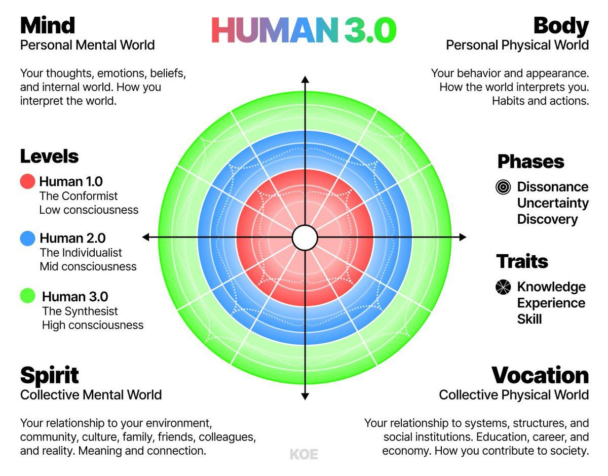
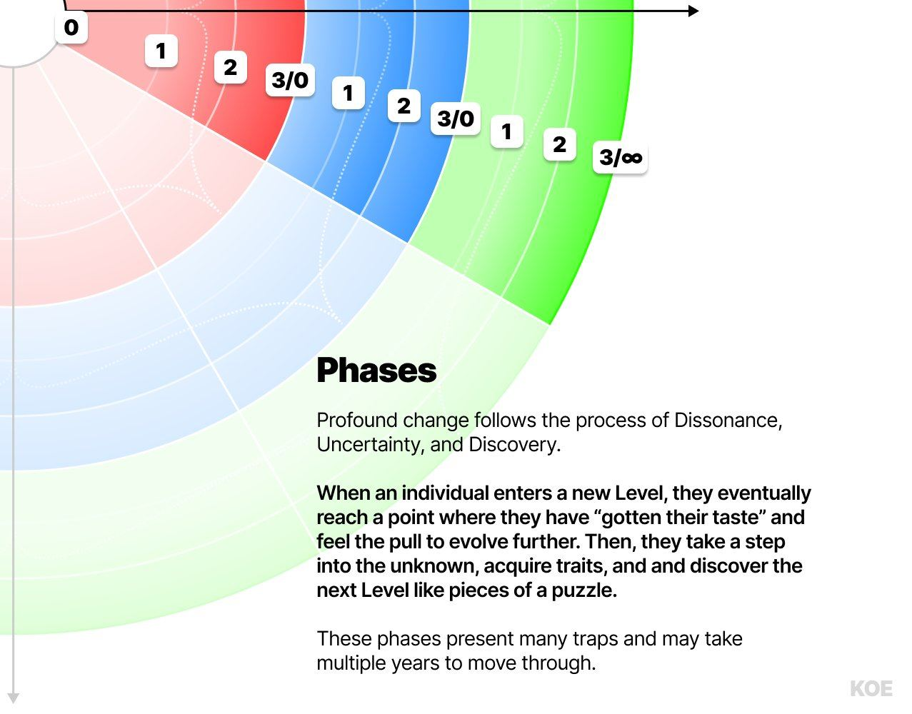
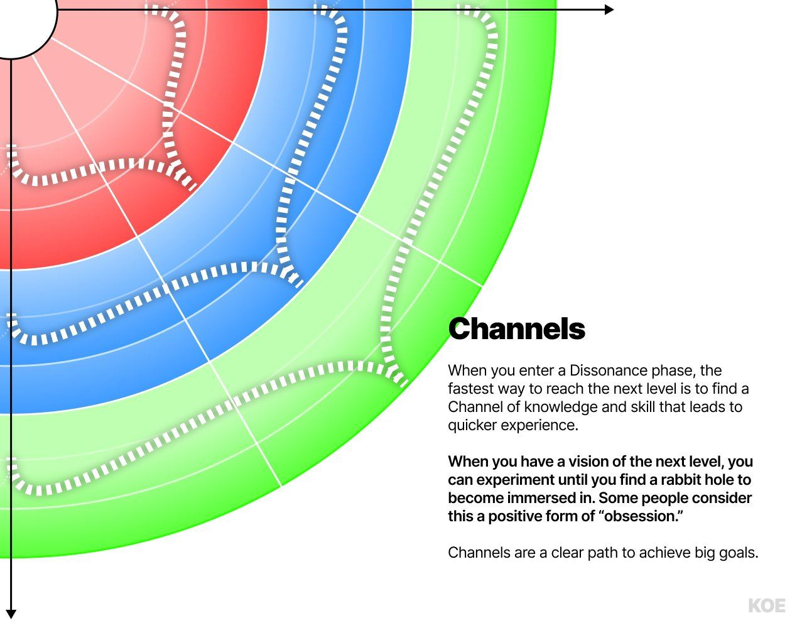
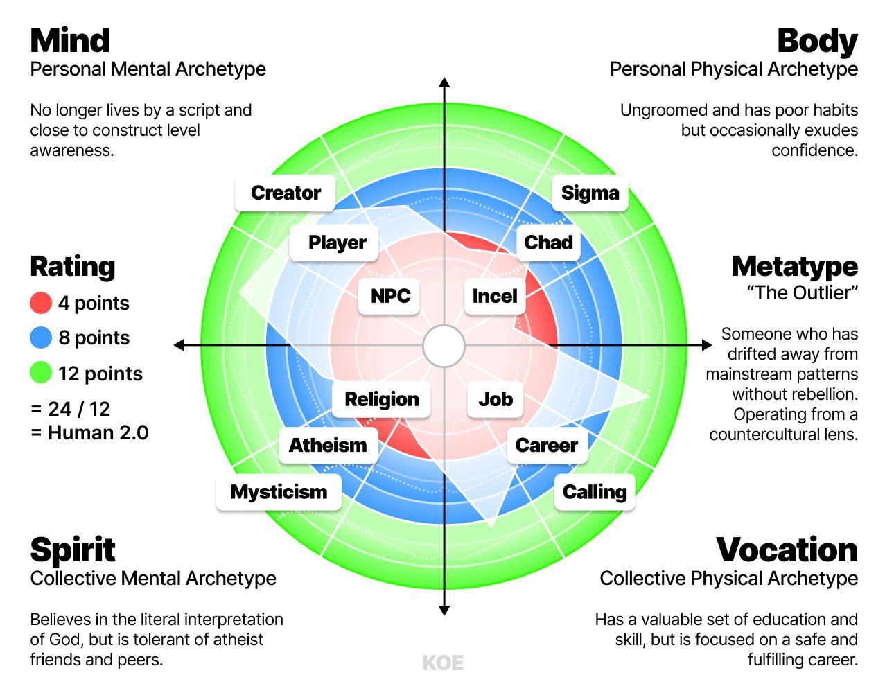

原题：Human 3.0 – A Map To Reach The Top 1%
作者：Dan Koe（@thedankoe） | 发布：2026-02-17 | 原文：https://x.com/thedankoe/status/2023779299367809063
译注：【配图】为原文配图位置。原文中的"在此处""链接如下"等指向的提示词链接，抓取到的正文中未附带具体网址，按原文保留文字。
这听起来可能很土，但我一直想成为一个彻头彻尾的"狠角色"。
不只是拥有一副好看又有肌肉的身体，而是在人生的每一个领域都得到充分发展。
我想在多个维度上都"练壮"。我想把所有属性都点满。我不想当 NPC。我想成为一个 100 级的玩家。地图所有区域都已解锁。体能、智力和职业全部满级。银行里的金币多得溢出来。我什么都想要。心智、身体、精神、关系、金钱。
这种渴望极大地影响了我的人生。
十几岁时，我痴迷于健身。然后，我想尽可能多地吸收知识。然后我想要自由，于是我在各种商业模式上一再失败，直到终于做成了一个。我经历过各种灵性和哲学上的阶段，我相信这些帮我以一种与常人完全不同的眼光，看待金钱和健身这类"肤浅的追求"。
过去 15 年里，我深入研究了心理学、个人成长、哲学、社会动力学、技术、互联网、创业、金钱、宗教和意义。
在过去 6 年里把我的发现写到网上之后，我注意到一些关键的重叠模式，它们已经开始为当今世界形成一种新的哲学。准确地说，是我个人的哲学，不过有些人可能会产生共鸣。
这就是"人类 3.0"（HUMAN 3.0）的由来。
我想把我学到的一切综合成一张全面的地图，用来驾驭现代的处境。我想给你知识、技能和原则，帮你摆脱平庸、实现你最高的潜力。我会尽量让它不教条、有科学依据，但我也想清晰而坚定地把要点讲出来。我打算用清晰、自然的语言为今天的世界写作，同时尽我所能地简化这些概念，免得它变成一本被遗忘的教科书。为此，我会用我说话的方式来说，把细微之处交给你。细微之处和批判性思考，永远在读者那里。
其中很多内容会是错的，我鼓励你质疑我说的话。事实上，我希望你能和我一起把它构建出来。如果你在自己的写作或内容中谈到人类 3.0，我很乐意看到。拿走这些观念，在此基础上继续构建。如果你喜欢 H3.0 模型，就用它。
现在，世界上已经有很多了不起的模型。
螺旋动力学（Spiral Dynamics，心理学）、佛教与基督教（意义）、唯物主义与唯心主义（现实的本质）、电商与咨询（商业）、红药丸与女性主义（社会动力学），等等。无论你看向哪里，都能找到数以百计承诺解决你所有问题的模型。
它们都有各自的真理，但致命的缺陷在于，它们往往局限于人生的某一个领域或视角。我们把数学、英语和科学当作单一的、彼此隔绝的课程来学，而知识其实是一张无限嵌套的网。我们在实验室里解剖青蛙并得出结论，却没有考虑它们所来自的整个生态系统和相互关联的关系。除此之外——对有些人来说这很难接受——很多灵性导师身体孱弱。很多商人维系不了关系。很多"阿尔法男"情绪失调。虽然这些人在各自领域都是了不起的成就，但真正全面发展的人很罕见。
即便这些模型或导师确实连接了多个领域，比如古希腊哲学，它们往往盛行于互联网、技术和 AI 开始改变一切之前。更重要的是，很少有模型触及工作和金钱这类领域，这很令人惊讶，因为它们主导着大多数人的头脑和生活。
今天，我们将为人类 3.0 打下地基。
在接下来的几个月（也许几年）里，我们会揭示真正把人生活到极致意味着什么。在这篇导论里，我无法涵盖这个模型包含的所有细节。
注：我建立了一个"人类 3.0 知识库"，其中包含这个模型的细节、对文明的影响、历史背景、科学基础，并融入了我的个人原则。如果你想要一份全面且便于速览的整体模型解析，可以在这里阅读，或者把它粘贴进 AI 里探索。我也会在文末附上链接（建议先读完本文）。https://letters.thedankoe.com
人类 3.0：一个最大化你潜力的模型
我做了一个 AI 提示词，帮你绘制自己的发展地图、找到你的"元类型"（Metatype），并识别你人生中下一个要解决的核心问题。我也会在下面附上链接。建议先读完这篇文章，好让你明白是怎么回事。

这个模型提供的是全局图景。它不是一套教条式的行动步骤，而是一套指导原则，帮助你达到最大潜力，更快地突破心智、身体、灵性和职业上的平台期。它为人类发展中发现的模式定位，并建立在各种已经完成大量繁重工作的科学、心理学、灵性和职业模型之上。
我的目标是汲取世界上最伟大理论中最好的部分，并把它们应用到个人的生活中。
一旦你理解了这个模型，你就可以开始标出你在每个象限中当前的发展水平（你的原型，Archetype），以及你的整体发展是什么样子（你的元类型，Metatype）。然后，你可以尝试进一步迈向 3.0+ 级的元类型——一个把人生所有领域都最大化了的人。
我们会在本文后面讨论这些，但现在，我们先理解地基。
1）象限（Quadrants）
人类 3.0 的地基，是代表人生四个领域的四个象限。
- 心智（Mind，个人心智世界）——你的想法、情绪、信念和内在世界。你如何诠释世界。
- 身体（Body，个人物理世界）——你的行为和外表。世界如何诠释你。包括营养、训练、爱好、习惯、仪表、沟通、着装等。
- 精神（Spirit，集体心智世界）——你与你的环境、社群、文化、家人、朋友、同事以及现实的关系。你如何获得意义和连接。
- 职业（Vocation，集体物理世界）——你与系统、结构以及教育、职业、经济等社会机构的关系。你如何融入社会并为之做出贡献。
这些象限改编自肯·威尔伯的 AQAL 模型，代表四种基本视角，构成一张涵盖所有知识和经验的概括性地图。
这张现实地图能防止片面思考，不会把问题简化为单一视角。一个内在的心理问题，未必最好用职业手段（比如找份新工作）来解决。一个精神问题，未必最好用身体手段（比如营养）来解决。一个资本家和一个基督徒在各自的领域里都很成熟，但当他们试图把自己的模型用到其他领域的问题上时，就会经历不必要的痛苦。金钱往往解决不了意义的问题，反之亦然，但这并不意味着它们没有紧密的联系。所有这些领域都相互重叠，而通过在以上所有领域发展自己，你开始过上一种由你掌控自己未来的生活。由于生命、发展和演化遵循一种朝向更多混乱或复杂性的总体展开，而有序结构的建立是为了容纳那种混乱，我们可以把生命的过程，尤其是你个人的生活，称为"解决问题"。
一颗种子展开，直到变成一朵花。一朵花比一颗种子复杂许多倍，而要达到那种状态，它需要从环境中获取资源来自我发展。种子天然渴望生长，并且在演化的许多历程中，解决了那些导致许多其他植物物种灭绝的问题。
有人可能不认为种子在有意识地试图生长或解决问题。不过，通过观察并把模式与我们的个人生活联系起来，我们会这样称呼它，因为语言是我们创造的。我们可以开始理解，生命存在一种朝向更大复杂性的自然流动。复杂性带来问题，而为了约束复杂性带来的熵，必须通过创造涌现出一个有序的结构。
在你自己的个人演化中，你渴望达到你的潜力 → 你迈入未知，遭遇复杂性 → 你获取知识和技能，去解决那些阻碍前进的问题（或者停滞不前，任由混乱吞噬你）→ 你的身份认同扩展并上升到一个新层级 → 这个过程不断重复，除非你卡住了。
这个模式可以在现实的所有层面和领域中被注意到。我鼓励你想出更多例子，但为了简洁，我们继续。
2）层级（Levels）
在每个象限内，有 3 个宏观的发展层级，分别代表低意识（1.0）、中意识（2.0）和高意识（3.0）。
这些层级改编自发展心理学中的各种模型，比如螺旋动力学和"自我发展的 9 个阶段"，它们本身已经是对许多心理学理论经过充分研究的叠加。简而言之，这些研究表明，我们的心智（影响我们如何思考和决策的价值观、信念和世界观）会随着时间经历一系列可预测的阶段而演化。
- 人类 1.0（从众者，The Conformist）——重视既定的权威和传统。特征是心胸狭隘、非黑即白的思维，相信只有"一种正确的方式"，这往往源于童年的条件反射。
- 人类 2.0（个人主义者，The Individualist）——拒绝常规，追求自己的目标。渴望获得地位、被视为有价值。他们不那么狭隘了，但现在相信自己的方式才是唯一正确的方式。
- 人类 3.0（综合者，The Synthesist）——能够采纳多重视角，连接现实的各种模式，并谋划新的道路。他们理解所有视角都包含可以被综合的真理，从而得出更整体、更互利的结果。他们可能会表现出一些在别人看来是 1 级的特质，比如心胸狭隘，但那是为了屏蔽噪音而做的有意选择。
在螺旋动力学这样的模型中，"螺旋"描述了个体在发展过程中如何在自我与他人之间来回转移关注点（比如拒绝宗教的社群，转而拥抱个人的无神论）。在人类 3.0 中，这发生在一个人在某个特定象限达到新层级的时候。一个人可以在心智象限成为个人主义者，这可能导致他把关注点转向精神象限，而他在那里仍处于从众阶段、服从权威。
每个层级的描述在每个象限中有不同的形态，比如职业象限（右下）中的 3.0 综合者能够有效地利用 AI 追求自己的毕生事业，而 1.0 从众者则由于缺乏知识、技能和经验，认为 AI 纯粹是邪恶的。
在身体象限（右上），一个低意识的个体对自己吃进身体的营养毫无理解，导致肥胖和懒惰，因为他们还没有获得做出更好决定的特质（Traits）；而一个高意识的个体理解各种营养素如何与身体相互作用，并能调整饮食来服务自己的目标。
这些层级反映了你在任一领域中自我的复杂程度。整张人类 3.0 图表代表的就是你。你越复杂（通过培养视角、扩展意识），人生就越有趣，因为你可以选择自己想接受的挑战。就像电子游戏：1 级类似于按脚本运行的 NPC（非玩家角色），2 级是选择自己故事线的主角，3 级是能创造出别人也喜欢玩的新游戏的程序员。注意：较低或较高的层级并不是"坏"或"好"，它们是一个人个人旅程中的不同节点。一个"高意识"的人并不更好，只是更成熟，而那种成熟有其明显的好处。你不会离开任何一个层级。你超越并包含前一个层级。你获得一个更大的视角，让你能够利用在较低阶段获得的知识、技能和工具。
下面我们会深入讨论更多例子。
如果你喜欢这篇，可以在这里订阅，让这些文章直接送到你手上，以防算法不推给你。
3）阶段（Phases）

在每个层级内，有 3 个发展阶段，一个人必须经过它们才能到达下一个层级。阶段代表纵向发展：向上升一级，或倒退回去。
当一个人经历深刻的改变时，我们可以观察到 3 种一般模式：
- 失调（Dissonance，第 1 阶段）——一旦一个人"尝够了"自己当前的人生阶段，并且没有被狭隘和舒适麻痹，他们就会对自己所在之处感到厌倦，却不确定接下来会是什么样的生活。
- 不确定（Uncertainty，第 2 阶段）——如果这个人足够清楚地意识到自己的厌倦，他们就会向未知迈出不确定的一步，向新的知识和技能敞开自己。
- 发现（Discovery，第 3 阶段）——就像在地图上探路，他们发现了让自己能够达到下一个发展层级的教育、工具、资源和洞见。
为了术语方便，我们可以在某个领域的层级后面加上所处的阶段，来标示一个人生活的特定方面。
例如，"职业 2.1"（第 2 级，第 1 阶段）代表集体外在意识（与系统、结构和社会机构的关系）的发展情况。"2"代表个人主义者层级，".1"代表他们几乎已经耗尽了那个阶段，必须向第 3 级迈出不确定的一步，去发现下一章会是什么。对职业象限来说，这可能意味着他们已经追求过一份新的职业，却意识到自己爬错了梯子，需要转向去发现自己的天职。
在这个过程中，个体很容易经历"虚假转变"（False Transformation）。他们可能觉得自己已经走完每个阶段、到达了一个新层级，但其实只是在模仿那个发展层级看起来的样子，却没有完成所需的特质发展。这是自我欺骗，会把人困在当前阶段，阻止他们进一步发展，直到他们解决了当前层级中剩余的问题。当一个人在某个领域（比如心智领域）发展了自己，并以为自己在另一个领域（比如精神或职业领域）也进步了时，就可能发生这种虚假转变。个体也可能在一段暂时的压力期，或者当一个超出其当前层级的问题进入生活时，退回到较低的层级。这就解释了为什么你可能会回望某段"感觉更好"的时光，渴望把那种感觉带回当下。
一种令人享受的人生——正如心流心理学以及尼采等许多哲学家的思考所表明的——就在于通过克服阻力而穿越这些阶段的过程。深刻的改变很少偶然发生。当你对自己的愿景、目标和优先级有意为之，不因干扰和舒适而倒退时，那些在这些阶段会吞噬大多数人的混乱就变得可以忍受，而且往往成为你珍藏心底的、人生中最充实的部分。
在第 3 级及以上，个体可以追求更复杂的挑战，并且为了对游戏本身的热爱而模拟这些阶段（比如一个 CEO 卖掉公司、陷入抑郁，然后从一个更开明的视角再创办一家），而由于游戏是他们自己创造的，它就变成了无限的。
4）特质（Traits）
在每个阶段内，有一个知识、经验和技能的门槛，你必须先达到它，下一个层级才会向你显现。阶段代表纵向发展，而特质代表横向发展，即在未知中探索，直到你发现了足够的东西、能够进入下一个阶段。
每个象限、层级和阶段都带来不同的挑战，需要一定程度的技能。而技能需要实验和学习。
一个人可以在健身方面知识渊博，但如果没有练习和经验，他们就会变成"胖私教"这种原型。他们的知识令人钦佩，但很少有人把他们当回事，这有利有弊。
纵向（阶段）和横向（特质）发展的陷阱都是无聊和焦虑。如果你在没有相应技能和经验的情况下试图跳到一个新的发展层级，你会焦虑并失败。如果你根本不尝试升级，你会变得无聊，转而诉诸舒适和干扰。
无聊和焦虑都会导致心智的无序，把你从演化展开的洪流中移除。你的生活看起来也许还行，但一切都感觉乏味而无意义。
这就引出了"通道"（Channels）——一种对抗无序、取得实质性进展的方式。
5）通道（Channels）

当你到达任何层级的失调阶段时，你就获得了利用"通道"的能力。
把通道想象成电子游戏里一个令人兴奋的任务。一个知识或技能的兔子洞。当你停不下来地研究一个话题、或投入一个项目，时间过得出奇地快。
在人类 3.0 图表上，你可以看到通道的一端在知识特质里，另一端在技能特质里。通常，一个人会"痴迷"于学习或建造，这会带来经验的快速增长，让他们在某个特定象限内迅速迈向下一个发展层级。
几个例子：
- 心智——沉浸在深度冥想状态中（技能），或者追随一条让你夜不能寐的思路，产生大量点亮大脑的想法（知识）。
- 身体——你发现一种新饮食、补剂或方法，把所有能找到的相关内容一口气看完（知识）。你在 3 个月里痴迷于跑步或举铁，取得了前所未有的进步（技能）。
- 精神——神秘体验。蜜月期。亲密时刻。找到一种与你当前人生阶段"一拍即合"的哲学。等等。
- 职业——达到一种极度清晰的状态，很快带来一次令人兴奋的转行、产品发布或一段创作高峰（技能）。你找到了完美的机会，停不下来地学习创业所需的技能（知识）。
进入通道的流程如下。
首先，在你完全适应了所在的层级之后，你必须到达失调阶段。一旦你厌倦了所在之处，并且没有对自己的问题变得麻木，你就把这种厌倦当作燃料，推进未知。你在某个特定象限（比如身体）内创建一个目标、愿景或目的。你开始获取知识和技能。你学，你做。你犯错，修正目标。你不断实验，直到找到那个把你吸进去的通道。
你能看出一个人是否在通道里：看他们谈起它时有多兴奋，比如一个写书写到了文字源源不断涌出阶段的人。他们有愿景。他们的技能和知识提供了一种清晰感，让他们能够突飞猛进。
当你处于失调阶段时，我能给的最好建议是：去寻找兴奋和热情，并毫无羞愧地追求它，因为那种羞愧是心智层级较低的信号，而你可以在这个过程中培养自信这项技能。
关于"漏洞"（Glitches）：
有一些策略可以强迫自己进入通道或突破发展平台期，我们称之为"漏洞"——就像矩阵里的漏洞，如果矩阵是第 1 级和第 2 级的边界的话，直到你在第 3 级创造出你自己的矩阵。迷幻药可以迫使人进入神秘体验。PEDs（提升表现的药物）可以加速健身进展。搬进一套你负担不起的公寓，可以提供一个真实的截止期限，迫使你不断学、不断做，直到副业做成。AI 是最新、最普及的漏洞，跨越所有领域。它可以被用来快速地自我发展，也可以被用来快速地自我毁灭。这需要品味和辨别力。只有从一个有限的视角看，AI 才是纯粹的善或纯粹的恶。对这些要小心，因为它们虽然加速进步，但在较低的意识层级上风险也更大。如果你在没有先前经验来诠释那种意识变异状态的情况下服用迷幻药，你可能会发疯。AI 精神病和把心智外包给 AI 正变得越来越普遍，不是因为 AI 不好，而是因为它就像用类固醇。如果你没有打好基础、没有广泛研究营养学的所有领域、没有理解所有可能的相互作用、没有训练 5 年以上（比喻意义上），AI 就会带来很糟糕的副作用。即便如此，现实中许多高回报的机制，无论你多么小心，都伴随着代价。对于某些有特定目标的人，可以有意识地决定承担那种风险，不顾后果。对大多数人，尤其是处于第 1 级的人来说，它们就是死刑判决。先把你"天然"的潜力发挥到极致，这样你就有充足的经验，不会被一招秒杀。知识和技能会降低风险。
如果你感到迷茫，你很可能正处于失调阶段，而如果你坚持下去，你就能找到下一个通道，重新爱上生活。
原型与元类型

在以后的信件和视频中，我们可以用人类 3.0 图表来理解一些人（比如乔丹·彼得森、安德鲁·泰特或艾伦·瓦茨），或者克服你人生中的问题，比如赚不到钱或找不到伴侣。
如果你对自己面临的某个问题或想理解的某个人有具体的请求，请回复这封信。
在这个模型里，我加入了所谓的原型和元类型。
- 原型（Archetypes）——出现在特定象限、以及这些象限内特定层级中的人物模式。
- 元类型（Metatypes）——一个人在每个象限中的四个原型的综合。
把元类型想象成一种性格测试，只不过针对的是一个人的自我发展。
我做了一个提示词，用来识别你的元类型、绘制你在所有象限中的发展地图，并找到你人生中的核心问题，在这里。
在上面的例子中，我在每个象限里只展示了 3 个原型。实际上远不止这些，所以请理解这些并不是一成不变的。我只是玩一玩。
你会注意到，当一个人在某个象限内发展自己时，存在一个从低意识到高意识的大致进程：
心智象限中的 NPC → 玩家 → 创造者，描述的是一个人不再按出生时分配给他的剧本生活，开始玩自己的游戏，然后创造新的游戏来玩（类似于"建构层级"的觉知）。
身体象限中的 非自愿独身者（Incel）→ 查德（Chad）→ 西格玛或贝塔男 → 阿尔法男 → 西格玛男，是当今世界常见的原型，可以从一个人的行为和外表中观察到。（译注：均为网络亚文化中的男性分类标签。）这可能与图表上的其他区域相对应，或者在同一象限内有更深层的原因。比如，Incel 通常由于饮食和环境而雌激素水平较高，而职业象限中的社会结构导致了加工食品和微塑料，这在大规模上进一步加剧了这个问题。
工作 → 职业 → 天职（Job → Career → Calling），是职业象限中众多进程之一。就工作而言，如今这可以从任何一点开始。有些人可能甚至没有工作，或者很早就进入了自己的天职。关于每个层级进程的关键洞见是：它们从低意识（从众者）开始，并有能力发展到高意识（综合者）。
宗教 → 无神论 → 神秘主义，是精神象限中一个常见的模式（不是唯一的模式），常见于在严格宗教家庭中长大、继而叛逆的人身上。然后他们重新发现了一种看待上帝的新视角，绕回到第 1 级所包含的那些真理。
肯·威尔伯的"前/超谬误"（pre-trans fallacy）发生在人们混淆前理性（从众者）状态与超理性（综合者）状态的时候，因为从传统的理性（个人主义者）视角看，两者都显得"非理性"。这可以朝两个方向发生。有人会把第 1 级的原始状态抬高到第 3 级的地位，也有人常常把真正的第 3 级发展贬低为原始思维。换句话说，一个知识和经验没有超出童年条件反射的"圣经狂"，很难认真对待一个神秘主义者，而神秘主义者往往持有同样的真理，只是来自一个更全面的视角。如果有帮助的话，想想那个智商钟形曲线的梗图。
当然，这只是发展进程在精神象限中可能展开的一个小例子。在个人关系、运动、家庭、科学或形而上学信念等方面，还有各种模式。
每个象限里都有几十到上百个原型，不只是我展示的这三个。
现在，就上面给出的例子而言，当我们在每个象限、层级、阶段和特质中标出发展的点位时，就能全面理解某个人处于什么位置。（你可以在地图上那个半透明的白色形状中看到。）
这个具体的例子中的人，处于人类 2.0。
我们是怎么得出这个结论的？
每有一个点位在第 1 级，就得 1 分。
每有一个点位在第 2 级，就得 2 分。
每有一个点位在第 3 级，就得 3 分。
然后，我们可以把总分除以 12（图表上发展切片的总数），得到 2.0。
在这个例子中，我们可以为他们在每个象限中的发展写出如下描述：
- 心智——不再按剧本生活，接近建构层级的觉知。
- 身体——不修边幅，习惯不好，但偶尔散发出自信。
- 精神——相信对上帝的字面诠释，但能包容无神论的朋友和同辈。
- 职业——拥有一套有价值的教育背景和技能，但专注于一份安全而充实的职业。
如果我们在每个象限里标出的不只 3 个原型，这会变得复杂、全面得多，但我们留到以后的信件里再说。
现在，如果我们把这些描述合而为一，就得到了他们的元类型。我打算用 AI 来做这件事，因为我不想让它变成一个静态的"性格测试"，把你塞进 16 个笼统的盒子之一。
在这个例子中，我们可以认为这个人的元类型是"局外人"（The Outlier）。简单来说，这是一个没有叛逆、却已经偏离了主流模式的人，从一种反文化的视角出发行事。他们不在乎自己的外表，但这可能是虚假转变，因为他们在身体象限中缺乏经验。
3.0 的生活方式
"一个人如何在所有象限中平衡发展？尤其是当其中一个象限耗费大量的时间、专注和精力时？"
终极目标，是通过解决问题，创造一种兼顾所有象限的生活方式。
如果你的职业占用了你太多时间，以至于你的心智心烦意乱，你累得顾不上身体，也无暇顾及精神，那这就是一个显而易见的问题，你必须尝试通过获取知识和技能来解决它，从而创造进入通道的机会。在这种情况下，一个人可以每天花一个小时研究商业机会，并留出一些时间练习。可能会比别人花更长时间，但一旦你开始穿越这些阶段，你就会更有信心，相信自己可以减少或完全摆脱当前那份占用你时间的工作。
这种转变可能会让另一个问题变得更明显，比如精力不足，或者得不到潜在客户和顾客的尊重。达到生意的下一个层级，可能不需要在生意上更多发展，而需要解决与身体、心智或精神相关的问题。即便如此，你可能建立起一门了不起的生意，拥有全世界的钱，却因为在职业追求中缺乏意义而胸口有一个空洞。
凭借解决问题这一简单的本质（并对那些阻止你注意到问题的干扰保持警惕），你创造出一种生活方式：工作变成玩耍，健康是你的默认状态，意义充沛，你的心智站在你这一边。
如果你真的一路读到了底，干得好。
如果你想让这些文章直接送到你手上，以防算法不推给你，可以在这里订阅。